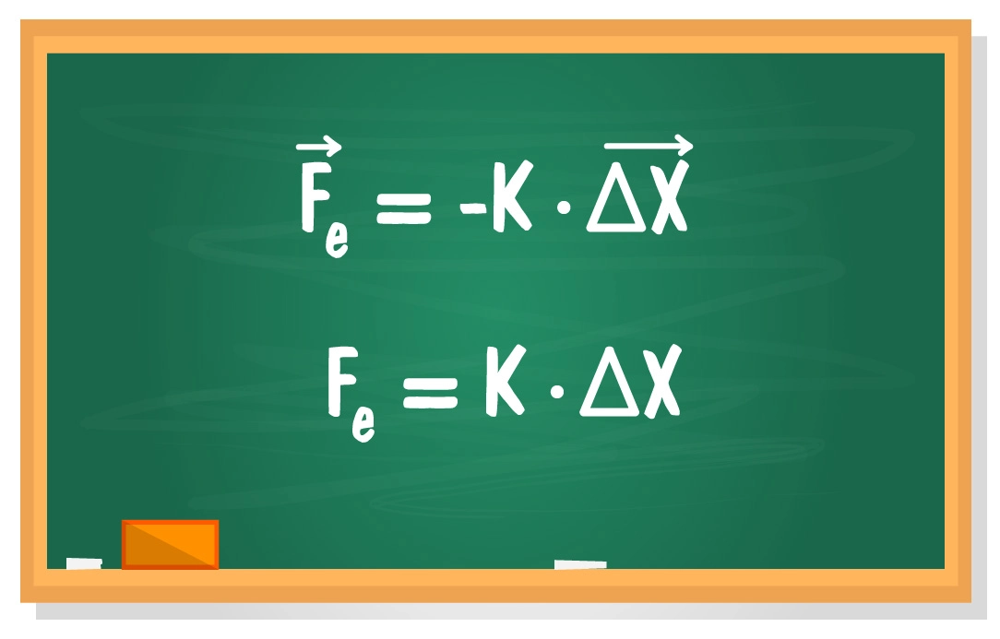
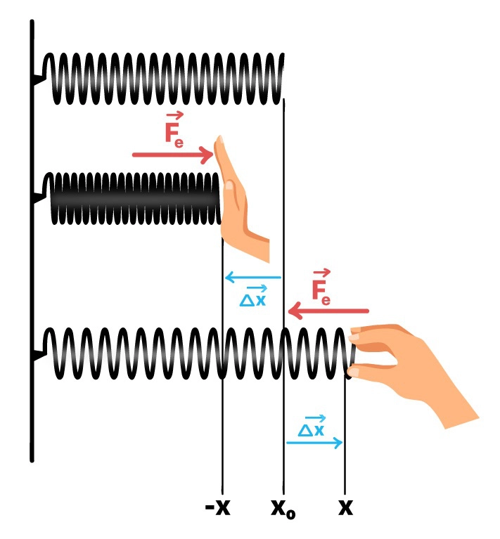
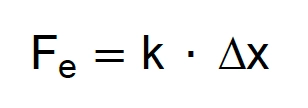

O que é a Força Elástica?

Fonte: Professor Ferreto
A força elástica é uma resposta da matéria contra deformações causadas por forças externas ou pela ação da temperatura. A força elástica é uma força restauradora, ou seja, age no sentido de restabelecer a condição que o corpo tinha
antes de ser deformado. Em regime elástico, essa força tem proporcionalidade com a deformação do corpo, sendo equacionada pela Lei de Hooke.
“Em regime elástico, a deformação sofrida por uma mola é diretamente proporcional à intensidade da força aplicada.”
Primeiramente, o que devemos entender por “regime elástico”? Bem, uma resposta simples seria: as condições em que a Lei de Hooke é válida. Mais abaixo, iremos estudar melhor o que é um regime elástico e um regime plástico. O importante
agora é entender a relação estabelecida por esta lei.
Podemos começar estudando a deformação de molas. A deformação é medida a partir da posição de equilíbrio, que é a posição onde a mola fica parada quando é deixada livre. Vejamos exemplos para entender melhor:

Fonte: Professor Ferreto
Na primeira imagem, temos a posição de equilíbrio, representada por x0. Nenhuma força externa age sobre a mola e ela permaneceria ali para sempre, parada. Ao empurrarmos a mola para a esquerda, causamos uma deformação, comprimindo-a
até a posição -x. A força elástica (que a mola exerce na mão) é direcionada para a direita, ou seja, a mola quer voltar ao comprimento inicial.
Na terceira imagem, a mola é esticada até a posição x, em uma deformação para a direita. A força elástica, agora, é para a esquerda, ou seja, a mola quer voltar ao tamanho inicial. Note a relação entre deformação e força elástica,
são sempre em sentidos opostos. É isso que o sinal negativo significa na fórmula:
A força elástica estará sempre em sentido contrário à deformação da mola. Por esse motivo, a força elástica também é chamada de força restauradora, pois é a resposta que a mola dá a uma ação externa e tenta levar a mola para a
condição inicial (comprimento inicial).
Conhecendo essa relação entre deformação e força elástica, podemos trabalhar diretamente com os módulos (valores) através da seguinte fórmula:
